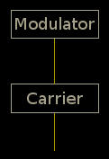
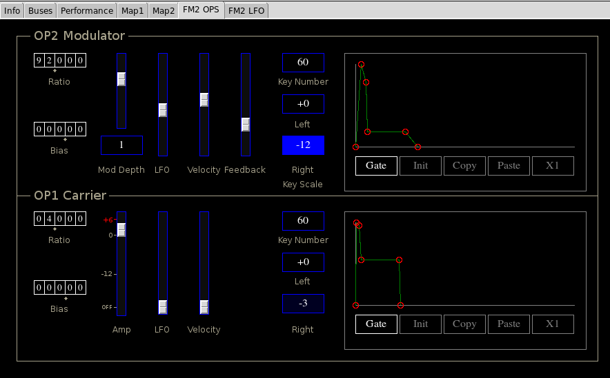
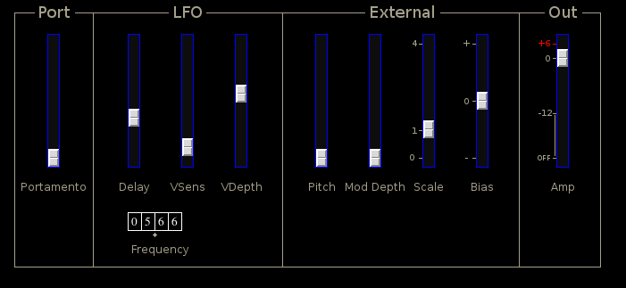

FM2
 Previous( synth_catalog )
Next( klstr )
Home
Contents
Previous( synth_catalog )
Next( klstr )
Home
Contents
FM2 is a simple 1-modulator 1-carrier FM synth.
FM2 OPS Panel
Editor tab FM2OPS contains nearly identical controls for both the modulator and carrier.
Each operator has controls for frequency ratio and bias, amplitude, LFO and velocity modulation, key scaling and envelope.
The tumbler controls on the left set frequency ratio and bias offset for each operator.
An interesting chorusing effect may be produced by setting the carrier ratio to 0 and the bias to some low value less then about 10, or even less then 1. Care should be taken since the carrier will be directly outputting a sub sonic signal. FM2 contains a fixed highpass filter on its output specifically to reduce the danger while using this technique.
Operator amplitude controls are different for the carrier and modulators. For the carrier the Amp slider sets the overall volume in db. The modulator has two amplitude controls which combine to set the Mod Depth (modulation depth). The box below the mod depth slider is a multi state button which scales the slider value. Extreme modulation depths may be obtained.
The LFO and Velocity sliders function the same for both carrier and modulator by setting an output modulation depth from the corresponding sources.
The modulator Feedback slider produces self modulation. With feedback at 0 the modulator produces a sine wave. As feedback is increased, higher harmonics progressively appear producing something like a sawtooth wave. As the feedback increases still further the modulator becomes chaotic.
Immediately to the left of the envelope are key scale controls. These are identical for both carrier and modulator. The top button sets a MIDI keynumber and has an increment of an octave (60=middle C). The middle button sets the scaling depth for notes to the left of the key number. The bottom button sets the right scaling depth. Scaling depths are in db per octave and have a range between ±12.
Keyscaling is most useful with the modulator where a negative scale factor is often useful to reduce the harshness of high notes. Positive left scale factors are useful for increasing brightness of low notes.
The carrier and modulator have identical ADDSR envelopes.
FM2 LFO Panel
The 2nd editor tab FM2 LFO contains controls common to both operators.
Portamento Sets portamento time (not available in Poly1 key mode)
LFO Delay, LFO onset delay
LFO VSens, Vibrato sensitivity
LFO VDepth, Vibrato depth
External Pitch, amount of external signal applied to pitch.
External Mod Depth, amount of external signal applied to modulation depth.
External Scale, scale factor applied to external signal.
External Bias, fixed bias amount added to external signal.
Out Amp, main output amplitude. See Volume slider
FM2 Parameters
- amp, overall linear amplitude (0,2)
- port, portamento time (0,1)
- xPitch, external signal pitch modulation (0,1)
- xModDepth, external signal modulation depth (0,1)
- xScale, external signal scale factor (0,4)
- xBias, external signal bias amount (0,4)
- lfoFreq, LFO frequency (0,99.99)
- lfoDelay, LFO onset delay in seconds (0,4)
- vsens, Vibrato sensitivity (0,1)
- vdepth, Programmed vibrato depth (0,1)
- op1Enable, Not used
- op1Ratio, carrier frequency ratio (0,99.999)
- op1Bias, carrier frequency bias (0,999.99)
- op1Amp, carrier linear amplitude (0,2)
- op1Attack, carrier attack time in seconds
- op1Decay1, carrier decay1 time in seconds
- op1Decay2, carrier decay2 time in seconds
- op1Release, carrier release time in seconds
- op1Breakpoint, carrier envelope breakpoint (0,1)
- op1Sustain, carrier envelope sustain level (0,1)
- op1GateHold, carrier envelope mode (0=gate, 1=trig)
- op1Keybreak, carrier keyscale breakpoint, MIDI key number (0,…48,60,72,…120)
- op1LeftScale, carrier left keyscale, db per octave (-12,+12)
- op1RightScale, carrier right keyscale, db per octave (-12,+12)
- op1Lfo, carrier LFO modulation depth (0,1)
- op1Velocity, carrier velocity modulation depth (0,1)
- op2Enable, Not Used
- op2Ratio, modulator frequency ratio (0,99.999)
- op2Bias, modulator frequency bias (0,999.99)
- op2Amp, modulator modulation depth (0,10)
- op2AmpRange, modulator, modulation scale factor (1,10,100,1000,10000)
- op2Attack, modulator attack time in seconds
- op2Decay1, modulator decay1 time in seconds
- op2Decay2, modulator decay2 time in seconds
- op2Release, modulator release time in seconds
- op2Breakpoint, modulator envelope breakpoint (0,1)
- op2Sustain, modulator envelope sustain level (0,1)
- op2GateHold, modulator envelope mode (0=gate, 1=trig)
- op2Keybreak, modulator keyscale breakpoint, MIDI key number (0,…48,60,72,…120)
- op2LeftScale, modulator left key scale, db per octave (-12,+12)
- op2RightScale, modulator right keyscale, db per octave (-12,+12)
- op2Lfo, modulator LFO modulation depth (0,1)
- op2Velocity, modulator velocity modulation depth (0,1)
- op2Feedback, modulator feedback (0,4)
Previous( synth_catalog ) Next( klstr ) Home Contents